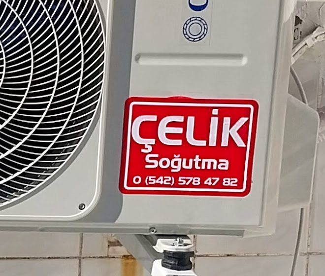

01 · KLIMA
Klima bakımı ve ilaçlı yıkama
İç ünite koruma örtüsüyle sarılır; filtre ve eşanjör ilaçlı suyla yıkanır, drenaj açılır, gaz basıncı ölçülür. Ev, apart ve pansiyonlarda birden çok klimaya aynı gün sırayla bakılır.
Klima bakımı, arıza tamiri, montaj ve gaz dolumu; çamaşır makinesinden buzdolabına evdeki tüm büyük cihazlar. Bahçelievler'den Manavgat, Side ve çevresine.

Çelik Teknik'te iş basit bir kurala dayanıyor: arızayı bulmadan parça değiştirilmez. Yorumlarda en sık okunan cümleler bunu anlatıyor; kimi zaman usta gelmeden telefonda yol gösteriyor, gerek yoksa parça değiştirmiyor.
Klima ve beyaz eşyada kart tamiri, motor yenileme, gaz kaçağı tespiti gibi işleri atölyede ya da yerinde yapıyoruz. Taktığımız parçaya garanti veriyoruz, pazar günü de kapımız açık.
Montajını yaptığımız her klimanın dış ünitesinde etiketimiz durur. Yıllar sonra bile aramanız gereken numara orada.



Her marka, her model. Klima başta olmak üzere evdeki tüm büyük cihazlar.
İç ünite koruma örtüsüyle sarılır; filtre ve eşanjör ilaçlı suyla yıkanır, drenaj açılır, gaz basıncı ölçülür. Ev, apart ve pansiyonlarda birden çok klimaya aynı gün sırayla bakılır.
Soğutmayan, su damlatan, ses yapan ya da hata kodu veren klimada arıza yerinde aranır. Elektronik kart çoğu zaman tamirle kurtulur; değişim son çaredir.
Klima gazı kendiliğinden bitmez; eksikse bir yerde kaçak vardır. Önce manometreyle ölçüm ve kaçak tespiti, sonra dolum.
Taşınırken ya da kiracı değişirken klimanızı söküp yeni yerine takıyoruz. Delik, boru ve drenaj işi temiz; duvarda iz bırakmadan.

Su boşaltmayan, sıkmayan, ısıtmayan, yıkamayan makinelerde pompa, motor, rezistans ve kart tamiri; çoğu arıza yerinde.

Soğutmayan, karlanan ya da durmadan çalışan dolaplarda motor, gaz, defrost ve kapı fitili işleri.

Kartı hemen değiştirmek yerine önce tamir: devre elemanı, sigorta ve lehim onarımıyla masrafı düşürürüz.

Isıtmayan fırın, yanmayan ocak gözü, sıcak su vermeyen şofben için ateşleme, rezistans ve termostat onarımı.

Bakımı yapılmış, çalışır durumda ikinci el cihazlar. Elimizde ne olduğunu WhatsApp'tan sorun, fotoğrafını gönderelim.
Cihazı ve belirtiyi seçin. Olası sebebi, sizin bakabileceğiniz şeyi ve ustanın yapacağı işi görün; tek dokunuşla kayıt açın.
1 · Cihaz
2 · Belirti
Gerçek yorumlardan kısa özetler. En çok geçen kelime: garanti.
“Kart arızasını bulup aynı gün çözdü, taktığı parçaya garanti verdi.”
Çamaşır makinesi · Google yorumu
“Pazar günü olmasına rağmen gelip yerinde baktı ve tamir etti.”
Bulaşık makinesi · Google yorumu
“Gerek olmayan parçayı değiştirmedi; telefonda yol gösterip masraftan kurtardı.”
Buzdolabı · Google yorumu
“Kiracı olarak defalarca klima söküp taktırdım; bu kadar temiz çalışanını görmedim.”
Klima · Google yorumu
“Montajdan kalan ve başka serviste çözülemeyen sorunu düzeltti.”
Klima · Google yorumu
“Sözünde durdu, zamanında geldi, ücreti makuldü.”
Bulaşık makinesi · Google yorumu
Kiralık daire, apart ve pansiyon sahiplerine sezon planı dahil.
Form, WhatsApp mesajı olarak hazırlanır ve tek dokunuşla ustamıza gider.
| Pazartesi | 09:00 – 18:00 |
| Salı | 09:00 – 18:00 |
| Çarşamba | 09:00 – 18:00 |
| Perşembe | 09:00 – 19:00 |
| Cuma | 09:00 – 19:00 |
| Cumartesi | 09:00 – 19:00 |
| Pazar | 09:00 – 17:00 |
Mahallenizi yazın, bölgemizde mi hemen görün.
Bahçelievler Mah. 5050. Sk. No:1, 07600 Manavgat/Antalya · Harita ve 360° sokak görünümü.
Gün içindeki yoğunluğa göre çoğu arızaya aynı gün bakmaya çalışıyoruz. WhatsApp'tan arızayı ve adresinizi yazarsanız gelebileceğimiz saati hemen söyleriz.
Evet. Pazar günleri 09:00–17:00 arası açığız. Hafta içi 09:00–18:00, perşembe–cumartesi 09:00–19:00.
Yalnız yazın kullanılan klimada yılda bir, yaz-kış kullanılanda yılda iki bakım önerilir. Kiraya verilen daire, apart ve pansiyonlarda sezon öncesi bakım misafir şikâyetini önler.
Klima gazı kullanıldıkça azalmaz; eksikse bir yerde kaçak vardır. Bu yüzden önce basınç ölçülür ve kaçağın yeri bulunur, sonra dolum yapılır.
Tüm markaların klima, çamaşır makinesi, bulaşık makinesi, buzdolabı, fırın ve şofbenlerine bakıyoruz.
Evet. Yaptığımız işler garantilidir; garanti süresi değişen parçaya göre işe başlamadan söylenir.
Arızayı görmeden kesin fiyat söylemek doğru olmaz. Yerinde tespitten sonra ücreti söyler, onayınızla işe başlarız. Fotoğraf ya da hata kodu gönderirseniz kabaca yön verebiliriz.
Evet. Manavgat merkez başta olmak üzere Side, Sorgun, Titreyengöl, Ilıca, Kızılağaç, Kızılot, Evrenseki, Çolaklı ve Gündoğdu'ya geliyoruz. Listede olmayan yer için sorun.
Manavgat'ta klima servisi ararken çoğu kişi önce Google yorumlarına bakıyor. Çelik Teknik, Bahçelievler'deki atölyesinden Manavgat merkez, Side, Sorgun, Titreyengöl, Ilıca, Kızılağaç, Kızılot, Evrenseki ve Çolaklı'ya klima bakımı, klima arıza tamiri, klima montajı ve gaz dolumu hizmeti veriyor. Google'da 255 yorumla 5,0 puan alması tesadüf değil: arıza yerinde bulunuyor, gerekmeyen parça değiştirilmiyor, yapılan işe garanti veriliyor.
Klimanın yanında Manavgat beyaz eşya servisi olarak çamaşır makinesi, bulaşık makinesi, buzdolabı, derin dondurucu, fırın ve şofben tamiri de yapıyoruz. Elektronik kart arızalarında önce tamir yoluna gidiyoruz; kart değişimi son çare. Side'de apart, Sorgun'da pansiyon ya da Manavgat'ta kiralık daireniz varsa sezon öncesi toplu klima bakımıyla misafir şikâyetinin önüne geçebilirsiniz.